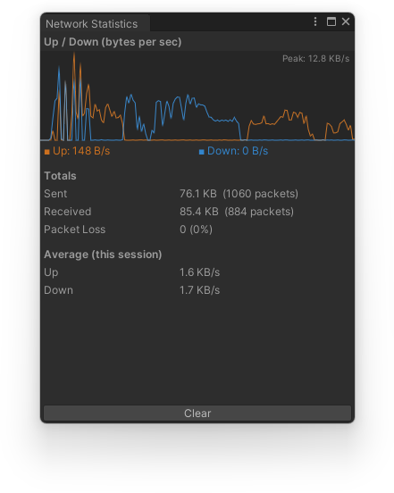

public class NetworkStatisticsWindow
Requires the project's transport to be set to TransportType.DefaultStatistics in the Alteruna configuration. If it isn't, the window shows a warning with a button that switches it for you. The plain Default transport never tracks any of this, so choosing it keeps your build free of the overhead. The graph plots bytes sent and received per second while in Play Mode, auto-scaled to the highest rate seen so far, shown in the corner of the graph. Below it are running totals (bytes and packet counts sent and received, packet loss and loss percentage) and the session's average up/down rate. Statistics keep showing after Play Mode stops, so you can inspect the last session's numbers at your own pace. Use the Clear button to reset the graph and totals, either between sessions or live while playing.